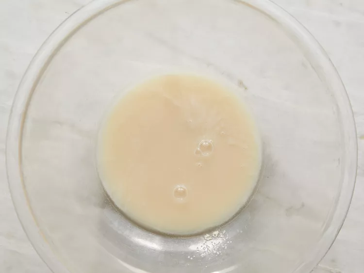
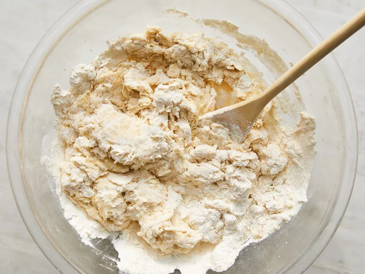
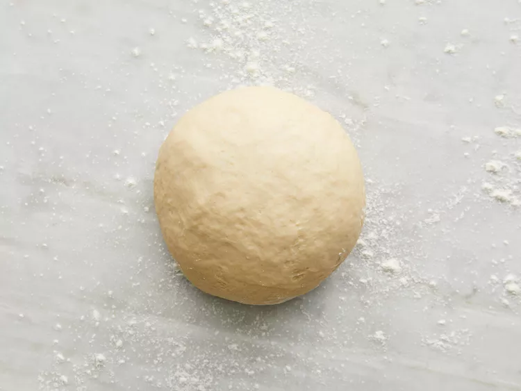
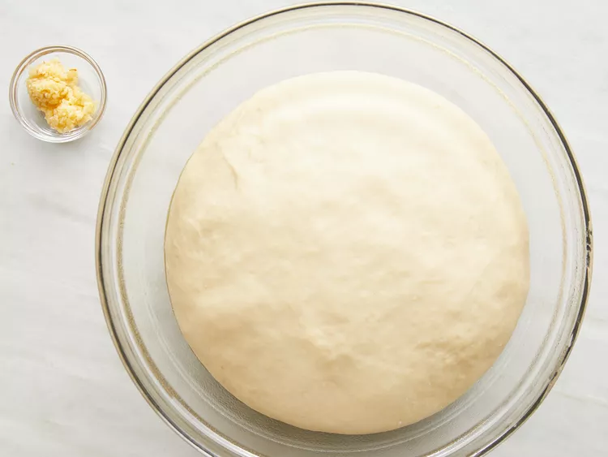
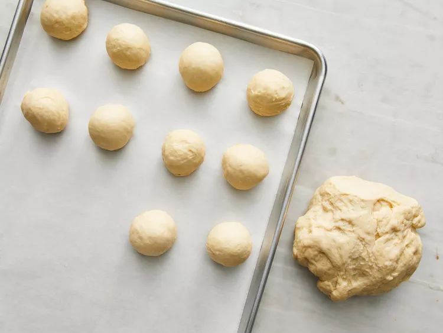
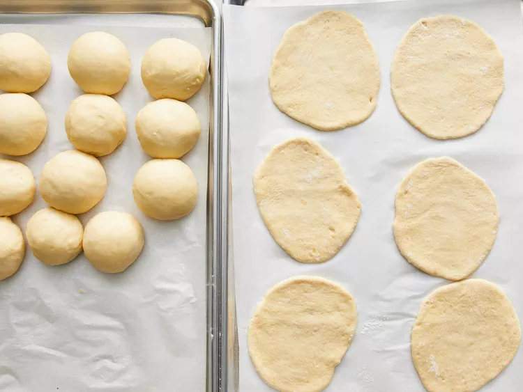
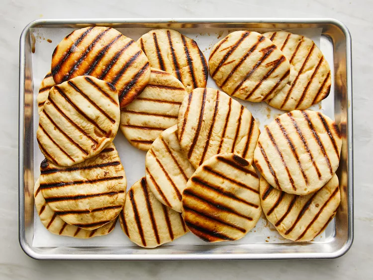
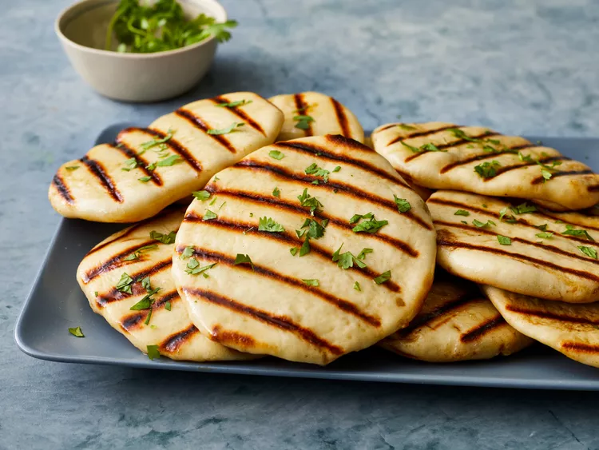

This homemade naan recipe makes soft, chewy naan with a buttery taste. It is the best I have tasted outside of an Indian restaurant. Simply delicious eaten warm brushed with melted butter or served with your favorite curry.
For 14 servings
Dissolve yeast in warm water in a large bowl. Let stand about 10 minutes, until frothy.

Meanwhile, generously oil a large bowl.
Stir sugar, milk, egg, and salt into the yeast mixture. Mix in enough flour to make a soft dough.

Knead dough on a lightly floured surface until smooth, 6 to 8 minutes.

Place dough in the prepared oil, cover with a damp cloth, and let rise until doubled in size, about 1 hour.

Punch down dough on a lightly floured surface, and knead in garlic. Pinch off small handfuls of dough about the size of a golf ball; you should have about 14. Roll each piece into a ball and place on a tray. Cover with a towel, and allow to rise until doubled in size, about 30 minutes.

Meanwhile, preheat a large grill pan over high heat.
Roll each piece of dough into a thin circle.

Brush some melted butter on the preheated grill pan. Place a few pieces of dough in the pan (as many as you can fit) and cook until puffy and lightly browned, 2 to 3 minutes. Brush butter onto the uncooked sides, flip, and cook until browned, 2 to 4 more minutes. Remove from the grill and repeat to cook the remaining naan.

Enjoy!
